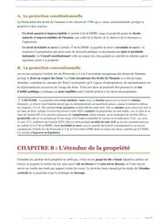

L'arrêt Maison de la Poésie sur le droit réel de jouissance spéciale, expliqué simplement
En 1932, une fondation vend son hôtel particulier en gardant, par contrat, le droit d'y rester gratuitement pour toute la durée de son existence. Pourtant, soixante-quinze ans plus tard, l'acheteur veut l'expulser en invoquant une limite légale de trente ans. La Cour de cassation donne raison à la fondation, en reconnaissant une liberté que le Code civil n'avait jamais écrite. Elle règle ainsi un débat resté ouvert depuis un arrêt de 1834, et sa solution te sert en cas pratique comme en dissertation.

Un droit réel taillé sur mesure, hors du Code civil
L'arrêt Maison de la Poésie a été rendu le 31 octobre 2012 par la troisième chambre civile de la Cour de cassation.
Il juge que le propriétaire peut accorder, sous réserve des règles d'ordre public, un droit réel conférant à autrui le bénéfice d'une jouissance spéciale de son bien, distinct des droits réels nommés par le Code civil. Il règle ainsi, en faveur de la liberté, un vieux débat, car les juristes se demandaient si la liste des droits réels prévus par la loi était fermée.
L'ordre public désigne ici les règles que la loi impose dans l'intérêt de tous, et qu'aucun contrat ne peut écarter. Cette règle paraît abstraite, mais elle tranche un litige très concret, celui d'une fondation menacée d'expulsion après soixante-quinze ans d'occupation gratuite.
La Cour de cassation devait juger si le droit d'occuper des locaux, jamais nommé par le Code civil, pouvait produire ses effets malgré la limite habituelle de trente ans.
Elle refuse de le réduire à un simple droit d'usage. Pour respecter la volonté des parties, elle reconnaît une catégorie de droit réel que le Code civil de 1804 n'avait jamais nommée.
Un droit réel porte directement sur une chose et s'impose à tous. Un droit personnel, au contraire, vaut seulement entre deux personnes. Le Code civil nomme quelques droits réels. À côté de la propriété, il prévoit l'usufruit, l'usage et l'habitation, ainsi que les servitudes. L'arrêt Maison de la Poésie juge que cette liste reste ouverte. Les particuliers peuvent donc créer par contrat un droit réel adapté à leurs besoins, sans suivre un modèle prévu par la loi.
La fondation La Maison de Poésie vend son hôtel particulier à la SACD, mais garde par contrat la jouissance gratuite de ses locaux pour toute la durée de son existence.
La SACD assigne la fondation en expulsion. La cour d'appel de Paris y voit un droit d'usage et d'habitation, limité à trente ans, et juge qu'il a pris fin.
La Cour de cassation casse l'arrêt et reconnaît la liberté de créer un droit réel de jouissance spéciale, distinct de l'usufruit.
La Cour interdit d'abord que ce droit soit perpétuel sans durée fixée. Elle valide ensuite sa durée dans cette même affaire, avant un troisième arrêt en 2023.

Fiche complète
Droit des biens L2
Les faits, un hôtel particulier vendu en 1932
Par un acte notarié des 7 avril et 30 juin 1932, la fondation reconnue d'utilité publique La Maison de Poésie vend un hôtel particulier à la Société des auteurs et compositeurs dramatiques (la SACD).
L'acte exclut expressément de la vente la jouissance des locaux où la fondation est installée. Il prévoit aussi que si la SACD a besoin de récupérer ces locaux, elle devra en construire d'autres, de même importance, que la fondation occupera gratuitement et pendant toute la durée de son existence.
Pendant soixante-quinze ans, personne ne conteste cet accord. Puis, le 7 mai 2007, la SACD demande en justice l'expulsion de la fondation et lui réclame une indemnité pour occupation sans droit ni titre, c'est-à-dire sans aucun droit reconnu sur les locaux. Pour la SACD, soixante-quinze ans d'occupation gratuite suffisent largement, et le droit accordé en 1932 ne peut pas durer indéfiniment.
La procédure et le pourvoi
La cour d'appel de Paris, par un arrêt du 10 février 2011, donne raison à la SACD. Elle qualifie le droit de la fondation de droit d'usage et d'habitation, au sens de l'article 625 du Code civil.
Or ce droit naît et prend fin de la même manière que l'usufruit. De plus, l'article 619 du Code civil limite à trente ans l'usufruit accordé à une personne morale. Selon ce calcul, le droit de la fondation avait pris fin en 1962, et il ne pouvait donc plus justifier son occupation.
La fondation se pourvoit en cassation, c'est-à-dire qu'elle demande à la Cour de cassation de vérifier que le droit a été bien appliqué, sans rejuger les faits de l'affaire.
Selon elle, les parties avaient voulu lui donner un droit attaché à l'immeuble pour toute la durée de son existence, et ce droit échappe donc à la limite de trente ans de l'usufruit. La SACD défend au contraire la qualification retenue par les juges du fond, qui lui permettait de mettre fin à une occupation gratuite vieille de plus de soixante-dix ans.
Peut-on créer un droit réel hors des catégories du Code civil ?
La Cour de cassation répond oui. Le propriétaire peut accorder à autrui un droit réel de jouissance qui sort des catégories nommées par le Code civil. Ce droit n'est donc pas soumis d'office aux règles obligatoires de l'usufruit.
La solution de la Cour de cassation
La troisième chambre civile casse l'arrêt d'appel, au visa des articles 544 et 1134 du Code civil, c'est-à-dire les deux textes que la Cour place en tête de sa décision pour fonder son raisonnement (l'article 1134 de l'époque, devenu depuis l'article 1103).
L'attendu de principe est la phrase où la Cour formule sa règle générale. Tu le retiens mot pour mot, car presque tous les commentaires de cet arrêt commencent par lui.
L'attendu de principe
« Il résulte de ces textes que le propriétaire peut consentir, sous réserve des règles d'ordre public, un droit réel conférant le bénéfice d'une jouissance spéciale de son bien. »Cass. 3e civ., 31 octobre 2012, n° 11-16.304, Maison de la Poésie
La Cour reproche ensuite à la cour d'appel de ne pas avoir respecté la volonté des parties. Les parties avaient décidé de donner à la fondation la jouissance des locaux pendant toute la durée de son existence. Les juges du fond ne pouvaient donc pas réduire cet accord à un droit d'usage et d'habitation construit sur le modèle de l'usufruit.
L'arrêt est cassé dans toutes ses dispositions, et l'affaire renvoyée devant la cour d'appel de Paris autrement composée, c'est-à-dire avec d'autres juges.
Le sens, la fin annoncée du numerus clausus
Pour comprendre cet arrêt, il faut d'abord distinguer un droit réel d'un droit personnel. Le droit réel porte directement sur une chose, sans passer par une autre personne, et il est opposable à tous, y compris à un futur acquéreur du bien.
Le droit personnel est seulement un lien entre deux personnes, comme une créance d'argent, et il vaut uniquement contre le débiteur.
Le droit de propriété est le droit réel le plus complet. À côté de lui, le Code civil a prévu des droits réels plus étroits, l'usufruit, l'usage, l'habitation et les servitudes, qui ne donnent qu'une partie des pouvoirs du propriétaire.
La Cour devait donc dire si cette liste était fermée. Sur ce point, deux thèses s'opposent depuis le dix-neuvième siècle.
La première est la thèse du numerus clausus, une expression latine qui veut dire « nombre fermé ». Défendue notamment par le juriste Demolombe, elle affirme que seule la loi peut créer des droits réels. En effet, un droit opposable à tous grève durablement un bien, c'est-à-dire qu'il reste attaché à ce bien longtemps. Il limite alors ce qu'un futur propriétaire peut en faire, et il lui impose une charge qu'il n'a pas choisie.
La thèse inverse, celle du numerus apertus, c'est-à-dire du « nombre ouvert », permet aux particuliers de créer librement des droits réels que la loi n'a pas prévus, puisque aucun article du Code ne l'interdit expressément.
La Cour choisit clairement la liberté. Elle reprend en effet un arrêt très ancien et longtemps discuté, Cass. req., 13 février 1834, Caquelard. Cet arrêt avait déjà jugé que les articles du Code sur la propriété et ses démembrements, c'est-à-dire les droits qui en détachent une partie, ne forment pas une liste limitative. Les parties peuvent donc modifier par contrat les droits ordinaires.
Pendant cent quatre-vingts ans, pourtant, personne ne savait vraiment quelle valeur donner à cet arrêt resté isolé.
L'arrêt de 2012 le confirme clairement et en fait le point de départ d'une jurisprudence nouvelle.
La Cour s'appuie sur deux articles. L'article 544 définit la propriété comme le droit de jouir et de disposer des choses de la manière la plus absolue.
L'article 1134 ancien donne aux contrats la force d'une loi entre les parties. Puisque le propriétaire est pleinement maître de son bien, il peut donc en détacher un droit de jouissance adapté à ses besoins et le céder durablement à autrui par contrat.
La liberté de créer des droits réels vient ainsi de la rencontre entre le caractère absolu de la propriété et la force obligatoire du contrat. Aucun texte ne l'autorise expressément.
Pour reconnaître ce droit nouveau, la Cour devait aussi le distinguer de l'usufruit, dont il aurait pu passer pour une simple variante. C'est pourquoi, en cassant l'arrêt d'appel, elle refuse de ramener le droit accordé à la fondation à un droit d'usage et d'habitation.
Elle reconnaît un droit réel autonome, qui suit la volonté des parties plutôt que le modèle fixé par la loi pour un droit nommé. Ce droit échappe donc à la limite de trente ans de l'article 619, qui vise l'usufruit accordé à une personne morale.
Envie de ne plus buter sur les grands arrêts de droit des biens ?
Je t'offre mon guide « Réviser le droit sans s'épuiser ». C'est la méthode que mes élèves utilisent pour retenir un arrêt par sa règle plutôt que par cœur, et pour la ressortir au bon endroit en cas pratique.
La portée, dix ans d'une saga jurisprudentielle
L'arrêt de 2012 prolonge des décisions plus anciennes. Quelques mois plus tôt, le 23 mai 2012, la même troisième chambre civile avait reconnu dans une autre affaire un droit réel perpétuel de jouissance sur des arbres plantés sur le terrain d'autrui. On l'appelle le droit de crû et à croître.
Dès 1992, un arrêt du 4 mars avait déjà admis qu'un règlement de copropriété pouvait conférer à certains lots un droit de jouissance exclusif sur une partie commune, qualifié lui aussi de droit réel perpétuel.
La troisième chambre civile admettait donc déjà, au cas par cas, des droits réels que le Code n'avait pas prévus. L'arrêt Maison de la Poésie transforme ces solutions en un principe général, applicable à tous les contrats à venir.
Une question importante restait pourtant sans réponse. L'arrêt de 2012 ne fixait pas la durée maximale de ce nouveau droit, et il ne disait pas s'il pouvait être perpétuel.
La Cour de cassation répond trois ans plus tard, dans un arrêt du 28 janvier 2015 (n° 14-10.013) rendu dans une autre affaire.
Elle y juge qu'un droit réel de jouissance spéciale ne peut pas être perpétuel quand les parties ne l'ont pas limité dans le temps. Il prend alors fin selon les règles qui limitent la durée de l'usufruit. Autrement dit, si le contrat ne fixe aucune durée, le droit suit la limite de l'usufruit, soit trente ans pour une personne morale comme la fondation.
La fondation a pourtant gardé son droit. Sur renvoi, la cour d'appel de Paris avait en effet jugé, le 18 septembre 2014, qu'elle restait titulaire d'un droit réel de jouissance spéciale pour toute la durée de son existence.
La SACD a formé un nouveau pourvoi, rejeté cette fois par un arrêt du 8 septembre 2016 (n° 14-26.953), que la doctrine appelle Maison de la Poésie II.
La Cour y confirme que les parties avaient elles-mêmes fixé la durée de ce droit, à savoir la vie de la fondation. Les articles 619 et 625 du Code civil ne s'appliquent donc pas, et le droit n'a pas à respecter leur limite de trente ans.
Il faut donc bien distinguer deux cas. Depuis 2015, un droit sans aucune fin prévue ne peut pas durer au-delà des limites de l'usufruit. En revanche, un droit dont la fin arrive tard, même très tard, reste valable dès lors que les parties l'ont réellement voulu.
L'affaire continue ensuite. La fondation a retrouvé la jouissance de ses locaux, mais elle reproche à la SACD de lui imposer des restrictions, notamment des horaires d'ouverture limités et un système de badges. Selon elle, ces mesures l'empêchent d'exercer normalement son droit.
Un troisième arrêt, rendu le 6 avril 2023 (n° 21-19.851, Maison de la Poésie III), rejette le pourvoi de la SACD et confirme sa condamnation. La Cour y juge aussi que la clause de 1932 laissait à la fondation le choix d'occuper elle-même les locaux ou de les louer, à condition que les revenus lui reviennent exclusivement.
Plus de quatre-vingt-dix ans après l'acte de vente, le litige montre ainsi qu'un droit réel de jouissance spéciale reconnu par le juge continue de produire des effets concrets, et de susciter des conflits.
La critique doctrinale
Cette décision a divisé la doctrine, et tu dois connaître les deux lectures. Louis d'Avout et Blandine Mallet-Bricout, dans leur note au Recueil Dalloz (La liberté de création des droits réels aujourd'hui, D. 2013, p. 53), analysent favorablement cette liberté retrouvée.
Pour eux, l'arrêt revient à la vraie nature de la propriété, dont les démembrements n'ont jamais été enfermés dans une liste fixe. Il donne aussi aux praticiens, comme les notaires, un outil souple pour organiser des occupations durables. L'usufruit, pensé pour des besoins familiaux, permettait en effet moins bien de régler ces situations.
William Dross adopte un ton plus prudent. Dans sa note à la Revue trimestrielle de droit civil (L'ordre public permet-il que soit créé un droit réel perpétuel ?, RTD civ. 2013, p. 141), il souligne en effet le risque d'insécurité juridique que fait courir cette liberté.
Un droit réel innommé s'impose à tous et peut rester attaché longtemps à un bien. Il rend alors sa vente plus difficile, car les futurs acheteurs ne savent pas toujours précisément quelles charges ils reprennent.
L'arrêt du 28 janvier 2015 a justement répondu à cette inquiétude, en interdisant au droit nouveau d'être perpétuel quand les parties n'ont fixé aucune durée. Le débat entre liberté contractuelle et sécurité de la propriété reste cependant ouvert. La jurisprudence a donc reconnu la liberté de créer ces droits, tout en limitant leur durée.
Comment utiliser cet arrêt dans une copie
Dans une dissertation sur les démembrements de la propriété ou sur la liste des droits réels, cet arrêt te permet de montrer que la liste des droits réels a toujours été plus ouverte qu'on l'enseigne parfois.
Tu cites d'abord Caquelard en 1834, un précédent resté isolé, puis Maison de la Poésie en 2012, qui confirme clairement sa solution. Tu nuances ensuite avec la limite posée par l'arrêt du 28 janvier 2015. Tu montres ainsi une jurisprudence qui construit une règle nouvelle en plusieurs étapes.
Dans un cas pratique, tu utilises cet arrêt dès qu'un énoncé décrit un propriétaire qui consent à autrui une jouissance particulière de son bien, sans que cette jouissance corresponde exactement à l'usufruit, à l'usage ou à une servitude.
Tu vérifies ensuite si les parties ont fixé une durée, car depuis l'arrêt de 2015 ce point décide de la durée du droit. Si les parties en ont prévu une, elle s'applique. Sinon, le droit prend fin selon les règles de l'usufruit, donc au bout de trente ans quand son titulaire est une personne morale. Tu retrouves toute la méthode sur ma page sur la fiche d'arrêt et celle sur le raisonnement juridique étape par étape.
Les erreurs à éviter avec l'arrêt Maison de la Poésie
- L'histoire de la liste des droits réels. Tu rappelles que l'arrêt Caquelard admettait déjà en 1834 la création de droits réels par contrat. Sa valeur est restée incertaine pendant cent quatre-vingts ans, jusqu'à ce que Maison de la Poésie la confirme.
- La durée du droit. Depuis l'arrêt du 28 janvier 2015, un droit réel de jouissance spéciale sans durée fixée par les parties suit les règles de l'usufruit, donc la limite de trente ans quand son titulaire est une personne morale. Tu vérifies toujours ce point dans l'énoncé.
- Le droit réel de jouissance spéciale et l'usufruit. Tu présentes ce droit comme autonome, distinct de l'usufruit et du droit d'usage classique. Il suit d'abord la volonté des parties, alors que l'usufruit obéit à un régime fixé par la loi.
- La limite de l'ordre public. Tu rappelles que la liberté du propriétaire s'exerce « sous réserve des règles d'ordre public », comme le précise l'attendu de principe. Un contrat ne peut donc pas créer un droit réel contraire à ces règles.
Questions fréquentes
Que dit l'arrêt Maison de la Poésie en une phrase ?
Quelle est la date et la juridiction de l'arrêt Maison de la Poésie ?
L'arrêt Maison de la Poésie est-il toujours d'actualité ?
Comment citer l'arrêt Maison de la Poésie en copie ?
Quelle différence entre le droit réel de jouissance spéciale et l'usufruit ?

Cet arrêt fait partie d'un programme de droit des biens beaucoup plus large.
Ma fiche de droit des biens L2 reprend tous les grands arrêts et toutes les notions. Chaque explication y est écrite en mots simples, et tu peux la réutiliser directement en commentaire comme en dissertation.
Voir la fiche de droit des biens L2